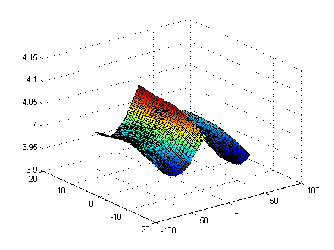
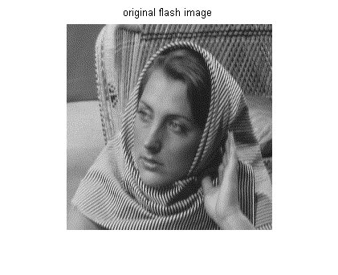
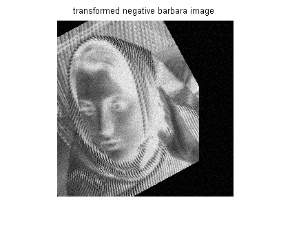
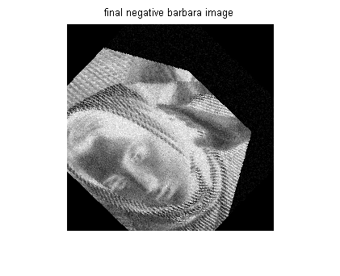

Contents
MyMainScript2
flash = double(imread('../data/barbara.png'));
noflash = double(imread('../data/negative_barbara.png'));
noflash = double(imrotate(noflash, 28.5, 'nearest', 'crop'));
noflash = imtranslate(noflash, -50);
noflash = double(noflash) + 10.*(randn(size(noflash)));
noflash(noflash<0) = 0;
noflash(noflash>255) = 255;
nBins = 10;
ijEnt = zeros(121,25);
for theta = -60:60
for tx = -12:12
im = imrotate(noflash, theta, 'nearest', 'crop');
im = imtranslate(im,tx);
ijEnt(theta+61,tx+13)=jointEntropy(flash,im,nBins);
end
end
[X,Y]=meshgrid(-60:1:60,-12:1:12);
surf(X,Y,ijEnt');
[ang,t]=find(ijEnt==min(min(ijEnt)));
finalIm=imrotate(imtranslate(noflash,t-13),ang-61,'nearest','crop');

Misaligned output
figure ,imshow(uint8(flash))
title('original flash image')
figure ,imshow(uint8(noflash))
title('transformed negative barbara image')
figure ,imshow(uint8(finalIm))
title('final negative barbara image')
  